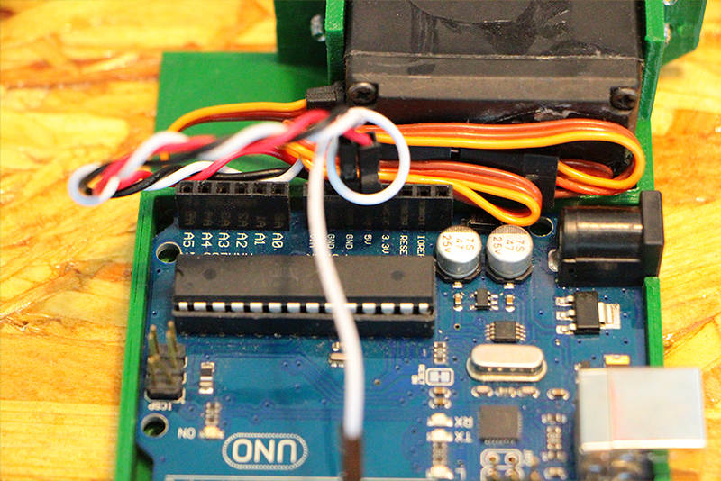

<!DOCTYPE HTML PUBLIC "-//W3C//DTD HTML 4.01 Transitional//EN" "http://www.w3.org/TR/html4/loose.dtd">
<html>
<head>
<meta http-equiv="Content-Type" content="text/html; charset=UTF-8">
<title>WebCamServoSweep</title>
<link href="tutorial_styles.css" rel="stylesheet" type="text/css">
<style>
body {
	color: #333;
	font-family: Tahoma, Geneva, sans-serif;
	background-image: url(images/background.gif);
	background-repeat: repeat;
}
</style>
</head>

<body>
<div id="container">
<p><a href="index-tutorials.html">Back to tutorial index</a></p>
<h1><a href="#">Webcam Arduino Sweep for videoconference</a></h1>
<h1></h1>
 

<p>This is a fast project on how to do a sweeping system for your labs webcam.
  You will only a few elements:</p>


<p><h5>-Arduino Uno</p>
<p>-Medium size servo(FS5106B)</p>
<p>-Usb arduino cable</p>
<p>-3mm screws x4</p>
<p>-Jumper wires x3</p>
<p><a href="http://www.thingiverse.com/thing:1348261">-3d printed holder</a></p>
<p>-Computer to upload the code</p>
<p>-Webcam (our choice is Microsoft Livecam Studio as the mount is very usefull and it's awesome quality)<h5></p>
<p>&nbsp;</p>
<p></p>


<h2>Assembling the hardware</h2>

<p>You first need a support to hold all the parts,I suggest to download the 3dprinted object that I used as it is already tested and works well.
  With a normal FDM 3d printer you can setup almost all kind of values (from ultra quality to low) and it would work. Personaly I choose a medium one as the webcam is in a public space and has to look nice.</p>
<p></p>
</p></p>
<p>You should try to mount the servo motor in the holder, the choice of a big servo is due that is going to we working a lot of hours with an uncentered mass of inertia.So it is overpowered to make it last a long time.</p>
<p>Use the four screws mounts to hold it tight.</p>
</p>
<p>After that you can just press the Arduino Uno on the big space of the holder as it should hold itself under pressure.</p>
<p>Now it is time to connect the jumper wires to the servo. To make easy to identify each wire we chose red(positive +5v), black (negative) and white (data) The wires connection is :</p>
<p></p>
<p><h5>-Jumper Red to Servo Red (or middle one)</p>
<p>-Jumper Black to Servo Brown </p>
<p>-Jumper White to Servo Orange<h5><h3>
Is very important to don't mismatch the polarity of the wires or it could finish with and useless arduino board or servo.
  <p>  
  <p>
  <p>Connect now the unconnected end of the jumper wires.
<h5>-Jumper Red to +5 Arduino</p>
<p>-Jumper Black to Gnd </p>
<p>-Jumper White to Pin9 (Digital)<h5></p>
<p>

  <h1><p>Now it is time to screw the webcam to the servo rotating part.Use a 3 mm screw with a proper washer to keep it in place properly.
  <p>    
  <h3>
</p>

</p>
<p>Hardware part finish!</p>
<p></p>
<p>
<h2>
<p>Let's go with Software
  </h2></p>
</p>
<p></p>
<p>For uploading the sketch to arduino you will need to install Arduino program.You can find it in the official <a href="http://www.arduino.cc">ARDUINO WEBPAGE</a></p>
<p>After installing the program.Connect your arduino to the computer with the usb wire. It may take some minutes the first time to recognize the device.Switch on the program.</p>
<p>&nbsp;</p>
<p> Go to FILE/EXAMPLES/SERVO/SWEEP</p>
<p>A need code may appear on your main screen.</p>
</p>
This is the base code that we use for the webcam movement but by defect it is to fast and we want to make somes changes before uploading to the board.</p>

<h5>Down here you can finde the code</h5><pre>
/* WebcamSweep
 by EduardoChamorro <http://eduardochamorro.wix.com/portfolio>
 This example code is in the public domain.

 modified 17 Feb 2016
 Based on
 http://www.arduino.cc/en/Tutorial/Sweep
*/

#include <Servo.h>

Servo myservo;  // create servo object to control a servo
// twelve servo objects can be created on most boards

int pos = 0;    // variable to store the servo position

void setup() {
  myservo.attach(9);  // attaches the servo on pin 9 to the servo object
}

void loop() {
  for (pos = 0; pos <= 90; pos += 1) { // goes from 0 degrees to 90 degrees
    // in steps of 1 degree
    myservo.write(pos);              // tell servo to go to position in variable 'pos'
    delay(2000);                       // waits 2000ms for the servo to reach the position
  
  delay(2000);          // waits 2000ms in 90 degrees position

  for (pos = 90; pos <= 180; pos += 1) { // goes from 90 degrees to 180 degrees
    // in steps of 1 degree
    myservo.write(pos);              // tell servo to go to position in variable 'pos'
    delay(2000);                       // waits 2000ms for the servo to reach the position
  }

  delay(2000);          // waits 2000ms in 180 degrees position
  
  for (pos = 180; pos >= 90; pos -= 1) { // goes from 180 degrees to 90 degrees
    myservo.write(pos);              // tell servo to go to position in variable 'pos'
    delay(2000);                       // waits 15ms for the servo to reach the position
  }

  delay(2000);          // waits 2000ms in 90 degrees position
  for (pos = 90; pos >= 0; pos -= 1) { // goes from 90 degrees to 0 degrees
    myservo.write(pos);              // tell servo to go to position in variable 'pos'
    delay(2000);                       // waits 15ms for the servo to reach the position
  }
  
}

</pre>
<p>Once made the changes to the code or just copied this one in to your code. We have to tell the program witch exact arduino board we are using and witch port it is using. </p>

<p>Go to TOOLS/BOARDS/ and select Arduino/Genuino UNO</p>
<p></p>
<p>Now is turn to select the port that our arduino device is using.</p>
<p>Go to TOOLS/PORT/ and select the one that says Arduino Uno (the name may change a little bit depending if your arduino is original or not)</p>
<p></p>
<p>We are ready to update the code! UPLOAD THE CODE BY PRESSING THE UPLOAD BUTTON ON THE LEFT UP CORNER.Wait until the green bar says &quot;uploaded&quot;</p>
<p>See the magic happens!</p>

<p>Now just put some double side tape on the back,velcro or use screws to place wherever you want. </p>
<p></p>
</div>
<div id="footer">
  <a rel="license" style="float:left;margin-right:10px;" href="http://creativecommons.org/licenses/by-nc-sa/3.0/"></a>
       All content © 2016 <a xmlns:cc="http://creativecommons.org/ns#" href="http://eduardochamorro.wix.com/portfolio" property="cc:attributionName" rel="cc:attributionURL">Eduardo Chamorro Martin</a><br />
          Licensed under a <a rel="license" href="http://creativecommons.org/licenses/by-nc-sa/3.0/">Creative Commons Attribution-NonCommercial-ShareAlike 3.0 Unported License</a> 
      </div>
</body>
</html>
